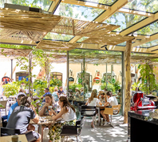
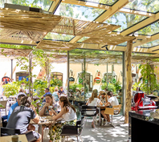
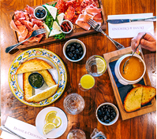
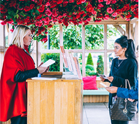
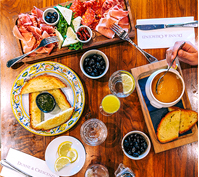
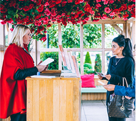

在歐洲和中國探索一流的奢華購物體驗
歡迎來到 The Bicester Collection (比斯特系列) —— 旗下11家獨一無二的購物目的地為您的旅程帶來精彩非凡的體驗。這些精品購物村距離世界上最具活力的熱門城市僅一小時左右的路程，匯集國際知名品牌，為您提供美輪美奐的精品以及 4 折甚至更低的優惠，超值特惠非同尋常。賓客服務熱情周到，餐飲口味獨具特色。
歐洲
倫敦．比斯特購物村 / 巴黎．河谷購物村
都柏林．可爾代爾購物村 / 法蘭克福．威爾特海姆購物村
布魯塞爾．馬斯梅克林購物村 / 米蘭．菲登扎購物村
巴賽隆納．羅卡購物村 / 慕尼黑．因戈爾施塔特購物村
馬德里．拉斯喀扎斯購物村
中國
蘇州．奕歐來蘇州購物村
上海．奕歐來上海購物村
 

 


